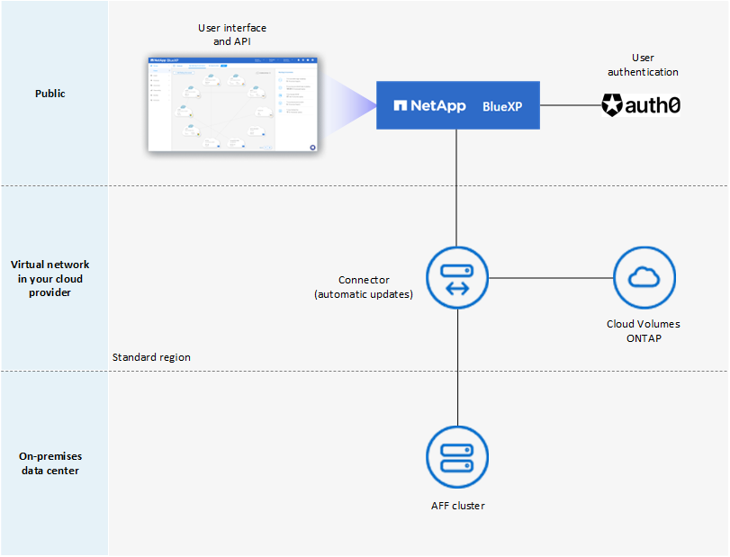
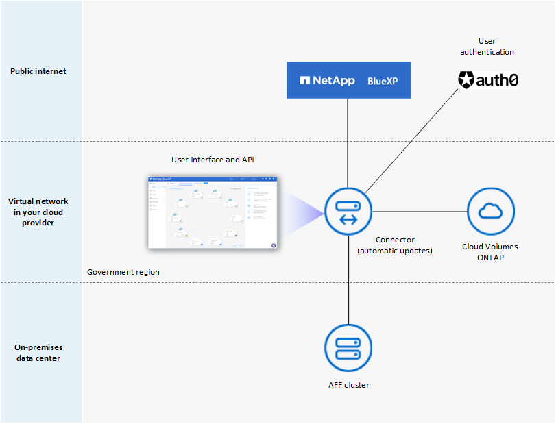
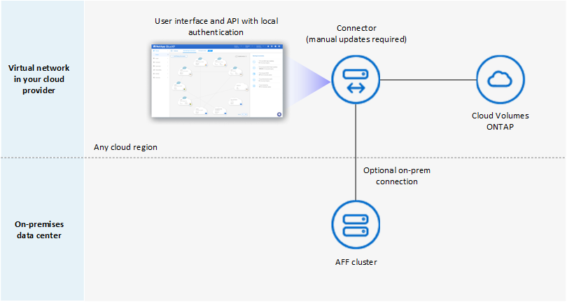
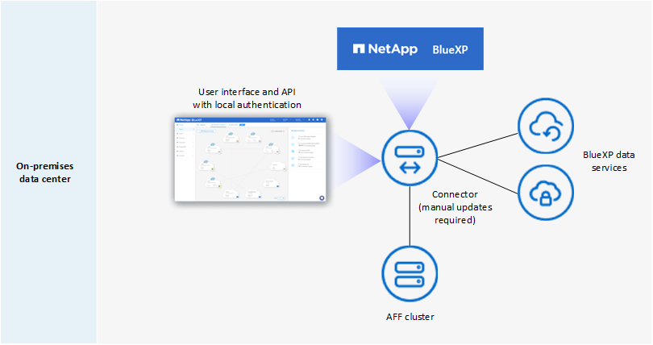

Request doc changes
Request doc changes Edit this page
Edit this page Learn how to contribute
Learn how to contributeBlueXP deployment modes
Contributors
BlueXP offers multiple deployment modes that enable you to use BlueXP in a way that meets your business and security requirements. Standard mode leverages the BlueXP SaaS layer to provide full functionality, while restricted mode and private mode are available for organizations that have connectivity restrictions.
While BlueXP inhibits the flow of traffic, communication, and data when using restricted mode or private mode, it’s your responsibility to ensure that your environment (on premises and in the cloud) is in compliance with the required regulations.
Overview
BlueXP offers the following deployment modes for your account. Each mode differs in terms of outbound connectivity requirements, deployment location, installation process, authentication method, available data and storage services, and charging methods.
- Standard mode
-
BlueXP is accessible to users as a cloud service from the web-based console. Depending on the BlueXP services that you’re planning to use, a BlueXP admin creates one or more Connectors to manage data within your hybrid cloud environment.
This mode uses encrypted data transmission over the public internet.
- Restricted mode
-
A BlueXP Connector is installed in the cloud (in a government region, sovereign cloud region, or commercial region) and has limited outbound connectivity to the BlueXP SaaS layer. Users access BlueXP locally from the web-based console that’s available from the Connector, not from the SaaS layer.
This mode is typically used by state and local governments and regulated companies.
- Private mode
-
A BlueXP Connector is installed on premises or in the cloud (in a secure region, sovereign cloud region, or commercial region) and has no connectivity to the BlueXP SaaS layer. Users access BlueXP locally from the web-based console that’s available from the Connector, not from the SaaS layer.
A secure region includes AWS C2S and SC2S and Azure IL6
The following table provides a comparison of these modes.
| Standard mode | Restricted mode | Private mode | |
|---|---|---|---|
Connection required to BlueXP SaaS layer? |
Yes |
Outbound only |
No |
Connection required to your cloud provider? |
Yes |
Yes, within the region |
Yes, within the region (if using Cloud Volumes ONTAP) |
Connector installation |
From BlueXP, cloud marketplace, or manual install |
Cloud marketplace or manual install |
Manual install |
Connector upgrades |
Automatic upgrades of NetApp Connector software |
Automatic upgrades of NetApp Connector software |
Manual upgrade required |
UI access |
From the BlueXP SaaS layer |
Locally from the Connector VM |
Locally from the Connector VM |
API endpoint |
The BlueXP SaaS layer |
The BlueXP SaaS layer |
The Connector |
Authentication |
Through SaaS using auth0, NSS login, or identity federation |
Through SaaS using auth0 or identity federation |
Local user authentication |
Storage and data services |
All are supported |
Many are supported |
Several are supported |
Licensing options |
Marketplace subscriptions and BYOL |
Marketplace subscriptions and BYOL |
BYOL |
Read through the following sections to learn more about these modes, including which BlueXP features and services are supported.
Standard mode
The following image is an example of a standard mode deployment.

BlueXP works as follows in standard mode:
- Outbound communication
-
Connectivity is required from the Connector to the BlueXP SaaS layer, to your cloud provider’s publicly available resources, and to other essential components for day-to-day operations.
- Supported location for the Connector
-
In standard mode, the Connector is supported in the cloud or on your premises.
- Connector installation
-
Connector installation is possible from a setup wizard in BlueXP, from the AWS or Azure Marketplace, or using an installer to manually install the Connector on your own Linux host in your data center or in the cloud.
- Connector upgrades
-
Automated upgrades of the Connector software are available from BlueXP with monthly updates.
- User interface access
-
The user interface is accessible from the web-based console that’s provided through the SaaS layer.
- API endpoint
-
API calls are made to the following endpoint:
https://cloudmanager.cloud.netapp.com - Authentication
-
Authentication is provided through BlueXP’s cloud service using auth0 or through NetApp Support Site (NSS) logins. Identity federation is available.
- Supported BlueXP services
-
All BlueXP services are available to users.
- Supported licensing options
-
Marketplace subscriptions and BYOL are supported with standard mode; however, the supported licensing options depends on which BlueXP service you are using. Review the documentation for each service to learn more about the available licensing options.
- How to get started with standard mode
-
Go to the BlueXP web-based console and sign up.
Restricted mode
The following image is an example of a restricted mode deployment.

BlueXP works as follows in restricted mode:
- Outbound communication
-
Outbound connectivity is required from the Connector to the BlueXP SaaS layer to use BlueXP data services, to enable automatic software upgrades of the Connector, to use auth0-based authentication, and to send metadata for charging purposes (storage VM name, allocated capacity, and volume UUID, type, and IOPS).
The BlueXP SaaS layer does not initiate communication to the Connector. All communication is initiated by the Connector, which can pull or push data from or to the SaaS layer as required.
A connection is also required to cloud provider resources from within the region.
- Supported location for the Connector
-
In restricted mode, the Connector is supported in the cloud: in a government region, sovereign region, or commercial region.
- Connector installation
-
Connector installation is possible from the AWS or Azure Marketplace or a manual installation on your own Linux host.
- Connector upgrades
-
Automated upgrades of the Connector software are available from BlueXP with monthly updates.
- User interface access
-
The user interface is accessible from the Connector that’s deployed in your cloud region.
- API endpoint
-
API calls are made to the following endpoint:
https://cloudmanager.cloud.netapp.com - Authentication
-
Authentication is provided through BlueXP’s cloud service using auth0. Identity federation is also available.
- Supported BlueXP services
-
BlueXP supports the following storage and data services with restricted mode:
Supported services Notes Amazon FSx for ONTAP
Full support
Azure NetApp Files
Full support
Cloud Backup
Supported in Government regions and commercial regions with restricted mode. Not supported in sovereign regions with restricted mode.
The following features are not supported: Applications, Virtual Machines, and Kubernetes.Cloud Data Sense
Supported in Government regions with restricted mode. Not supported in commercial regions or in sovereign regions with restricted mode.
The following limitations apply:
-
OneDrive accounts, SharePoint accounts, and Google Drive accounts can’t be scanned.
-
Microsoft Azure Information Protection (AIP) label functionality can’t be integrated.
Cloud Volumes ONTAP
Full support
Digital Wallet
You can use the Digital Wallet with the supported licensing options listed below for restricted mode.
On-premises ONTAP clusters
Discovery with a Connector and discovery without a Connector (direct discovery) are both supported.
When you discover an on-prem cluster with a Connector, the Advanced view (System Manager) is not supported.Replication
Supported in Government regions with restricted mode. Not supported in commercial regions or in sovereign regions with restricted mode.
-
- Supported licensing options
-
The following licensing options are supported with restricted mode:
-
Marketplace subscriptions (hourly and annual contracts)
Note the following:
-
For Cloud Volumes ONTAP, only capacity-based licensing is supported.
-
In Azure, annual contracts are not supported with government regions.
-
-
BYOL
For Cloud Volumes ONTAP, both capacity-based licensing and node-based licensing are supported with BYOL.
-
- How to get started with restricted mode
-
You need to enable restricted mode when you create your BlueXP account.
If you don’t have an account yet, you’ll be prompted to create your account and enable restricted mode when you log in to BlueXP for the first time from a Connector that you manually installed or that you created from your cloud provider’s marketplace.
If you already have an account and you want to create another one, then you need to use the Tenancy API.
Note that you can’t change the restricted mode setting after BlueXP creates the account. You can’t enable restricted mode later and you can’t disable it later. It must be set at time of account creation.
Private mode
In private mode, you can install a Connector either on premises or in the cloud and then use BlueXP to manage data across your hybrid cloud. There is no connectivity to the BlueXP SaaS layer.
The following image shows an example of a private mode deployment where the Connector is installed in the cloud and manages both Cloud Volumes ONTAP and an on-premises ONTAP cluster.

Meanwhile, the second image shows an example of a private mode deployment where the Connector is installed on premises, manages an on-premises ONTAP cluster, and provides access to supported BlueXP data services.

BlueXP works as follows in private mode:
- Outbound communication
-
No outbound connectivity is required. All packages, dependencies, and essential components are packaged with the Connector and served from the local machine. Connectivity to your cloud provider’s publicly available resources is required only if you are deploying Cloud Volumes ONTAP.
- Supported location for the Connector
-
In private mode, the Connector is supported in the cloud or on premises.
- Connector installation
-
Manual installations of the Connector are supported on your own Linux host in the cloud or on premises.
- Connector upgrades
-
You need to upgrade the Connector software manually. The Connector software is published to the NetApp Support Site at undefined intervals.
- User interface access
-
The user interface is accessible from the Connector that’s deployed in your cloud region or on premises.
- API endpoint
-
API calls are made to the Connector virtual machine.
- Authentication
-
Authentication is provided through local user management and access. Authentication is not provided through BlueXP’s cloud service.
- Supported BlueXP services in cloud deployments
-
BlueXP supports the following storage and data services with private mode when the Connector is installed in the cloud:
Supported services Notes Cloud Backup
Supported in AWS and Azure commercial regions.
Not supported in Google Cloud or in AWS C2S/SC2S or Azure IL6Cloud Volumes ONTAP
Because there’s no internet access, the following features aren’t available: automated software upgrades, AutoSupport, and AWS cost information.
Digital Wallet
You can use the Digital Wallet with the supported licensing options listed below for private mode.
On-premises ONTAP clusters
Requires connectivity from the cloud (where the Connector is installed) to the on-premises environment.
Discovery without a Connector (direct discovery) is not supported. - Supported BlueXP services in on-prem deployments
-
BlueXP supports the following storage and data services with private mode when the Connector is installed on your premises:
Supported services Notes Cloud Backup
Only back up and restore of on-prem ONTAP volumes to StorageGRID systems is supported.
Learn how to back up on-prem ONTAP data to StorageGRIDCloud Data Sense
-
The only supported data sources are the ones that you can discover locally.
-
Features that require outbound internet access are not supported.
Digital Wallet
You can use the Digital Wallet with the supported licensing options listed below for private mode.
On-premises ONTAP clusters
Discovery without a Connector (direct discovery) is not supported.
Replication
Full support
-
- Supported licensing options
-
Only BYOL is supported with private mode.
For Cloud Volumes ONTAP BYOL, only node-based licensing is supported. Capacity-based licensing is not supported. Because an outbound internet connection isn’t available, you will need to manually upload your Cloud Volumes ONTAP licensing file in the Digital Wallet.
- How to get started with private mode
-
Private mode is available by downloading the "offline" installer from the NetApp Support Site.
Service and feature comparison
The following table can help you quickly identify which BlueXP services and features are supported with restricted mode and private mode.
Note that some services might be supported with limitations. For more details about how these services are supported with restricted mode and private mode, refer to the sections above.
| BlueXP service or feature | Restricted mode | Private mode |
|---|---|---|
Amazon FSx for ONTAP |
Yes |
No |
Amazon S3 |
No |
No |
AppTemplate |
No |
No |
Azure Blob |
No |
No |
Azure NetApp Files |
Yes |
No |
Cloud Backup |
Yes |
Yes |
Cloud Data Sense |
Yes |
Yes |
Cloud Sync |
No |
No |
Cloud Tiering |
No |
No |
Cloud Volumes ONTAP |
Yes |
Yes |
Cloud Volumes Service for Google Cloud |
No |
No |
Compute |
No |
No |
Digital Advisor |
No |
No |
Digital Wallet |
Yes |
Yes |
E-Series |
No |
No |
Economic efficiency |
No |
No |
Global File Cache |
No |
No |
Google Cloud Storage |
No |
No |
Kubernetes clusters |
No |
No |
On-prem ONTAP clusters |
Yes |
Yes |
Operational resiliency |
No |
No |
Ransomware Protection |
No |
No |
Replication |
Yes |
Yes |
StorageGRID |
No |
No |
Credentials |
Yes |
Yes |
NSS accounts |
Yes |
No |
Notifications |
Yes |
No |
Timeline |
Yes |
Yes |